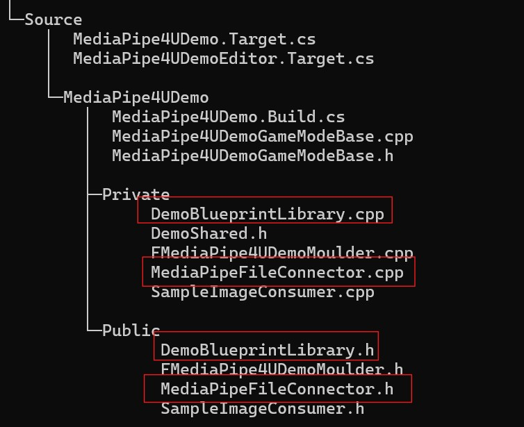
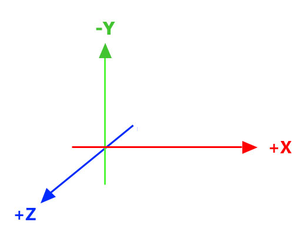
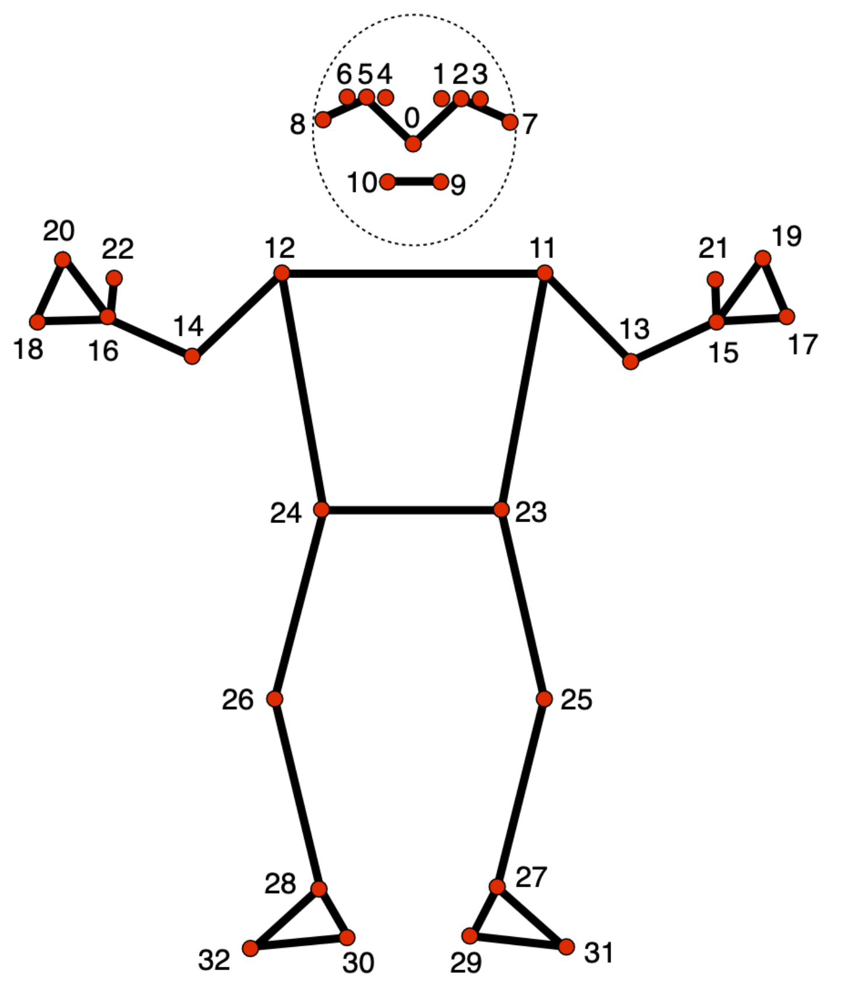
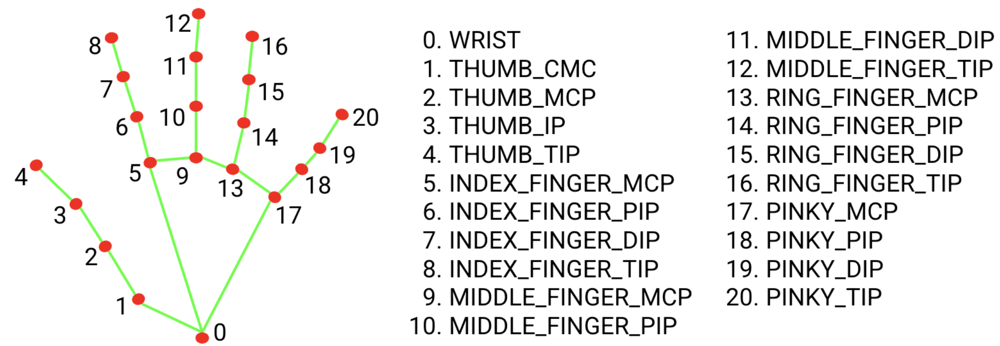

整体替换 Google MediaPipe (C++)¶
MediaPipe4U 提供了可插拔的算法连接器，你可以使用自己的算法，或者自己的 MediaPipe 程序（例如： python 服务器端运行的 mediapipe 程序）来代替内置的 google mediapipe 算解程序。
前提条件¶
虽然 MediaPipe4U 提供了替换 mediapipe 算法的能力， 但是 MediaPipe4U 使用的是 mediapipe 的 Blazor Pose 骨骼结构，其他方案例如 SMPL、SMPLX 在 MediaPipe4U 中将无法正确运行。
因此，如果你决定替换 google mediapipe 算法，必须符合如下要求:
- 算法输出的骨骼结构符合 Blazor Pose 结构。
- 算法输出的地标（Landmarks）坐标系和 google mediapipe 算法保持一致。
- 如果算法包含表情 (BlendShape) 输出，必须符合 Apple ARKit 标准。
Tip
除了骨骼结构，坐标系，表情规范，地标使用的规格也应该和 google mediapipe 保持一致：
Google MediaPipe 中地标有两种地标，具体含义如下：
NormalizedLandmark
x，y 和 z: 以米为单位的真实世界3D坐标，原点位于臀部之间的中心。
Landmark
x 和 x: 分别由图像宽度和高度归一化为 [0.0，1.0] 的地标坐标, 原点 [0.0, 0.0] 是图片的左上角;
z: 表示以 hips 中点处的深度为原点的地标深度，该值越小，地标越靠近相机。z 的大小使用与 x 大致相同的比例。
MediaPipe4U中PoseWorldLandmark使用的是 NormalizedLandmark，其余均为 Landmark。
实现步骤¶
要完整的替换 MediaPipe4U 中的 google mediapipe 算法，可以采取如下步骤：
- 实现一个继承自
IMediaPipeHolisticConnector自定义连接器 (Connector). - 提供一个蓝图函数库 （
UBlueprintFunctionLibrary）来调用UMediaPipeHolisticComponent的StartCustomConnector或StartCustomConnectorAsync函数。 - 在 Unreal Engine 蓝图编辑器中使用步骤 2 提供的蓝图函数来代码
StartCamer/StartImageSource等函数。
下面详细介绍这些技术细节。
IMediaPipeHolisticConnector¶
MediaPipe4U 提供了一个 IMediaPipeHolisticConnector 用于定义 Unreal Engine 和 google mediapipe api 之间的连接。
通过在 C++ 中实现一个继承自 IMediaPipeHolisticConnector 的类可以替换 MediaPipe4U 内置的连接器 (Connector)。
下面是 IMediaPipeHolisticConnector 的 C++ 定义。
class IMediaPipeHolisticConnector
{
public:
static IMediaPipeHolisticConnector& Get();
static IMediaPipeHolisticFeatureRegistry& GetFeatureRegistry();
virtual bool ConfigureGraph(const MediaPipeGraphCnf& InConfig) const = 0;
virtual void EnableFrameCallback(bool Enabled) = 0;
virtual bool IsConnected(UObject* Owner) const = 0;
virtual bool Connect(UObject* Owner) = 0;
virtual bool Disconnect(const UObject* Owner) = 0;
virtual bool StartPipeline(long long SessionId, IImageSource* ImageSource, const FMediaPipeHolisticOptions& Options) = 0;
virtual void StopPipeline() = 0;
virtual bool PushFrameToPipeline(TSharedRef<IMediaPipeTexture> InTexture, int RotationDegrees) = 0;
virtual FLandmarksOutputEvent& OnPoseLandmarksTrigger() = 0;
virtual FLandmarksOutputEvent& OnPoseWorldLandmarksTrigger() = 0;
virtual FLandmarksOutputEvent& OnLeftHandLandmarksTrigger() = 0;
virtual FLandmarksOutputEvent& OnRightHandLandmarksTrigger() = 0;
virtual FFaceBlendShapesOutputEvent& OnFaceBlendShapesTrigger() = 0;
virtual FFaceGeometryOutputEvent& OnFaceGeometryTrigger() = 0;
virtual FLandmarksOutputEvent& OnFaceLandmarksTrigger() = 0;
virtual FImageSizeDetectedEvent& OnImageSizeDetectedTrigger() = 0;
virtual FMediaPipeFailedEvent& OnMediaPipeFailedTrigger() = 0;
virtual FMediaPipeFrameEvent& OnMediaPipeFrameTrigger() = 0;
virtual bool AddListener(const TSharedPtr<FMediaPipeHolisticListener>& InListener) = 0;
virtual bool RemoveListener(const TSharedPtr<FMediaPipeHolisticListener>& InListener) = 0;
protected:
virtual ~IMediaPipeHolisticConnector() = default;
};
生命周期函数¶
Tip
在 MediaPipe4U 中 IMediaPipeHolisticConnector 调用顺序（生命周期）如下：
graph LR
A[Connect] --> B{StartPipeline};
B --> C{StopPipeline}
C --> D{Disconnect}Connect: 内置的 Connector 在 MediaPipeHolisticComponent 初始化时调用, 自定义 Connector 在 UMediaPipeHolisticComponent 的 StartXXX 函数调用时调用。StartPipeline: UMediaPipeHolisticComponent 的 StartXX 函数调用时调用。StopPipeline: UMediaPipeHolisticComponent 的Stop/StopAsync函数调用时调用。Disconnect: 内置的 Connector 在 MediaPipeHolisticComponent 卸载 ( Uninitialize ) 时调用, 自定义 Connector 在 UMediaPipeHolisticComponent 的Stop/StopAsync函数调用时调用该函数。
实现自定义 Connector 时，下面的函数实现是可以选的：
ConfigureGraph： 配置 mediapipe 图形，自定义 Connector 时直接返回 true 即可。EnableFrameCallback: 允许 frame 回调， 自定义 Connector 可以什么都不做。Connect: 如果你在StartPipeline中处理逻辑，直接返回 true 即可。Disconnect: 如果你在StopPipeline中处理逻辑，直接返回 true 即可。
实现自定义 Connector 时，下面的函数无需实现：
PushFrameToPipeline： 当 ImageSource 的模式是 Push 时，这个函数接受主动推送帧， 由于自定义 Connector 目前不使用 ImageSource ， 因此你无需实现它。
事件函数¶
以 On 开头，并且以 Trigger 结束的函数表示当自定义算法求解出数据时需要触发的事件，你实现的事件越多，功能就越完整。
| 函数 | 数据类型 | 受影响功能 |
|---|---|---|
| OnPoseLandmarksTrigger | 主要数据 | MediaPipeAnimInstance 用它计算人物位置（ MediaPipe Location Solver 动画蓝图节点 ）。 |
| OnPoseWorldLandmarksTrigger | NormalizedLandmark | MediaPipeAnimInstance 用它计算人物姿势（ MediaPipe Pose Solver 动画蓝图节点 ）。 |
| OnLeftHandLandmarksTrigger | Landmark | MediaPipeAnimInstance 用它计算人物左手的姿势和手腕翻转（ MediaPipe Hand Solver 动画蓝图节点 ）。 |
| OnRightHandLandmarksTrigger | Landmark | MediaPipeAnimInstance 用它计算人物右手的姿势和手腕翻转（ MediaPipe Hand Solver 动画蓝图节点 ）。 |
| OnFaceBlendShapesTrigger | Blend Shape Map | MediaPipeLiveLinkActor 用它计算人物表情。 |
| OnFaceGeometryTrigger | Landmark | 无 |
| OnFaceLandmarksTrigger | Landmark | MediaPipeAnimInstance 用它计算人物头部转动（ MediaPipe Head Solver 动画蓝图节点 ）。 |
| OnImageSizeDetectedTrigger | Landmark | MediaPipeAnimInstance 用根据它配合 PoseLandmarks 计算人物位置（ MediaPipe Location Solver 动画蓝图节点 ）。 |
| OnMediaPipeFailedTrigger | int64 | MediaPipeHolisticComponent 错误处理。参数： session id: 来自 StartPipeline 的第一个参数。 |
| OnMediaPipeFrameTrigger | IMediaPipeOutFrame | 输出图像， MediaPipeHolisticComponent 用它来回显图像。 |
IMediaPipeOutFrame
IMediaPipeOutFrame 是表示回显的图像的接口，在内置 MediaPipeConnector 中通常是带有装饰线条的图片帧。
这个接口必须实现引用计数功能（类似智能指针）。
特别说明几个函数：
IncreaseReferenceCount: 引用计数 + 1，当你输出时，引用计数为 1。
Release: 引用计数 - 1，当引用为 0 时，必须释放内存。
如果你觉得回显图像不是必要的，你的连接器可以没有 OnMediaPipeFrame 事件（永远不触发
OnMediaPipeFrameTrigger）。
监听支持函数¶
AddListener 和 RemoveListener 为外部提供数据监听器支持，MediaPipe4U 中通过这些函数完成其他功能。
使用 FMediaPipeConnectorBase 基类¶
为了简化实现过程， MediaPipe4U 提供了简化版的基类 FMediaPipeConnectorBase, 它实现起来比 IMediaPipeHolisticConnector 要容易得多。
建议你使用 FMediaPipeConnectorBase 作为基类。
使用 FMediaPipeConnectorBase ， 你只需要实现如下函数, 其他函数已经由 FMediaPipeConnectorBase 实现：
OnConnectOnStartPipelineOnStopPipelineOnDisconnect
例子¶
你可以在 MediaPipe4U Demo 工程 源码中找到一个替换 Google MediaPipe 的具体例子，该例子中我们通过读取一个数据文件，来输出 mediapipe 数据，而不是从图像源捕获图像进行计算。
在这个例子中，重点关注如下文件：

MediaPipeFileConnector.h: Connector 头文件 , 查看源码MediaPipeFileConnector: Connector 的具体实现，查看源码DemoBlueprintLibrary.cpp: 蓝图函数库头文件, 查看源码DemoBlueprintLibrary.cpp: 提供蓝图函数库实现, 查看源码
最终我们在蓝图编辑器中调用 StartMediaPipeDataFile 函数来读取本地磁盘上的一个 MediaPipe 数据文件。
这个数据文件也可以在 MediaPipe4U Demo 工程的根目录下找到 （查看数据文件）。
MediaPipe 参考¶
MediaPipe 3D 坐标系¶

33 个身体地标¶

21 个手部地标¶
